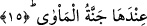

ilâhîden döndükten sonra da aynı gece yorganına büründüğü zaman Rabbi’ni gördüğünü,
bir an bile olsa kalbinin bu ru’yetten uzaklaşmadığını ve Hakk Sübhânehû’nun zikrettiği
Nebî (a.s.)’ın birinci seferde imkân bulduğu rü’yetullahın ikincide Sidre-i Müntehâ’da
da aynı şekilde tahakkuk ettiğini söylerdin. Zîra Sidre’de Allah’ın tecellî etmesi kıdem
ve celâl sıfatlarının zuhûrudur ki bu çeşit zuhûr mekân ve zamana taalluk etmez. Çünkü
kıdem, mekân ve cihetlerden münezzeh olduğu gibi abd ve Rabb Teâlâ’nın bir mekânda
bulunmuş olması da söz konusu değildir. İşte bu Allah’ın kemal-i tenzîhi ve lûtf-i
âzîminin büyük bir delâletidir. Zira Allah’ın Zâtı Rasûlullah’ın imkân dâiresinde
bulunduğu an tecellî etmiş ve bu sırada orada akıl darmadağın, ilim de perişan olmuştur.
Çünkü akıllar âciz, zanlar şaşkın, kalpler ve ruhlar hayretler içinde ve sırlar da zâil bir
durumda kalmıştır.
Bu âyette Habîbullahın kemâl-i şerefinin beyân vardır. Çünkü Rasûlullah bir önceki
inişinde Sidre-i Müntehâ’da Allah Teâlâyı görünce, bu gördüğünün Allah’ın mekân ve
zamandan münezzeh oluşundan dolayı kemâl-i ilmiyle Allah olamayacağını zannetmiş,
ancak ikinci defa gördüğünde Hakk Teâlâ’nın hiçbir yeni icaddan ve cömerd ev
sâhiblerinin kendisine gelen ziyaretçiyi kapıya kadar geçirmesi âdetleri gibi hiçbir
büyüklük âdetinden uzak olmadığını anlamıştır. İşte bu Allah’ın Habîbine karşı ızhar
etmiş olduğu sevginin kemâlidir. Bu âyette işâret olan husûsun hakikati ise Allah
Sübhânehû’nun Habîbine değişik görüntülerde gelme makamını öğretmektir. Ancak
Allah’ın bu şekildeki tecellîsi bir çeşit perdelemedir. Nitekim Hakk Teâlâ Sidre-i
Müntehâ’da Rasûlullah’a zuhûr ettiği gibi Mûsâ (a.s.)’ya da üzüm ağacından tecellî
etmiştir. Bu tecellî ile Allah Habîbine kemâl-i mârifeti öğretmeyi murad etmiştir. Zirâ
sevdiği kimseyi değişik elbiseler içindeyken tanıyamayan kimse gerçekten onun tanıyanı
değildir.” Baklî’nin sözü burada bitti.
Hakk Teâlâ, Sidre’yi tâzîm edip onun şerefini beyân etmeyi murad etmektedir.
15. Cennetü’l-Me’vâ da onun yanındadır.
Sidre-i Münteha’nın yanında oturulacak bahçe vardır. Yâni müttakîlerin veya
şehidlerin ruhlarının gidip kendilerine yurt ittihâz edecekleri bir cennet civarındadır.
Burası müttakî kimselerin veya şehîd ruhlarının kalacakları bir cennettir. Veya bu bahçe,
Âdem ve Havva (aleyhimusselâm)’ın sığındıkları bahçedir.
Şeyh-i Ekber (k.s.) şöyle demiştir: “Âdem (a.s.) bugün Cibrîl (a.s.)’ın makamı olan
Cennet-i Me’vâ’dan indirilmiştir. Bu cennet-i Me’vâ Âdem (a.s.)’ın zamanında Âdem
(a.s.)’ın zürriyetine âid olan bir alandı. Cebrâîl (a.s.) Âdem (a.s.)’ın oradan
indirilmesiyle Sidre’den oraya inmiştir. Bu cennet ebediyeti ihtivâ etmeyen türden
olduğu için Âdem (a.s.)’ın oradan çıkması mümkün olmuştur. İblis’in kendisine gurur